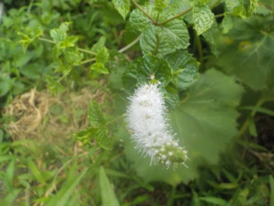
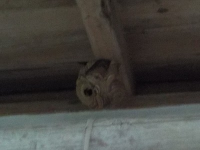
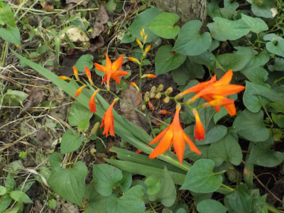
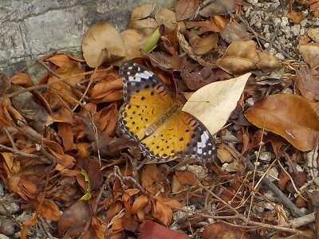

遊びで植物を育てよう
2022/07/31
スズメバチの巣を綺麗に取り除きました。

スズメバチが壊れた巣を再生しようとしています。
巣の中がまる見えなので、全部が出かけたら巣を落とそうと思っていましたが、常に1匹残っていました。
しかたないので1匹だけの時に近づいて、近距離で殺虫剤をかけました。
その後すぐに巣を綺麗に取りました。
これでスズメバチとはお別れになるでしょう。
【7月TOP】
【日記TOP】
【園芸TOP】
2022/07/31
ミントの花が咲いていました。

何年も前からミントが植わっていますが、花を見たのは初めてかもしれないです。
ミントはお茶にしたり、食べ物に添えたり、香りを楽しむとか言いますが、それぞれ好きじゃないので使っていませんでした。
なのでミント自体をあまり見ることはありませんでした。
【7月TOP】
【日記TOP】
【園芸TOP】
2022/07/24
軒下にスズメバチの巣が出来ていました。

夕方に発見したので写真が暗いです。
暗くなって蜂が飛び回らなくなってから、クワでたたき落としました。
落ちた巣から出た蜂は、また軒下の巣があった場所に集まっていたので、再び巣を作るかもしれません。
【7月TOP】
【日記TOP】
【園芸TOP】
2022/07/17
花が咲いていると雑草扱い出来ないですね。

ヒメヒオウギズイセンがあちこちで生えてます。
邪魔なので切ってしまえばいいですが、花がキレイなので残してしまいます。
邪魔なものは邪魔です。余計な手間が掛かるしストレスになるので、次に邪魔だと思ったら容赦なく切ろうと思います。
【7月TOP】
【日記TOP】
【園芸TOP】
2022/07/13
鬼百合が咲きました。

庭のオニユリが咲きました。夕方に写真を撮ったので暗いです。
近くで見るとキレイじゃないですね。
【7月TOP】
【日記TOP】
【園芸TOP】
2022/07/10
ツマグロヒョウモンがのんびり飛んでいました。

あんまり見ない蝶がいるなって近づいたら、逃げなかったので写真を撮りました。
ネットで調べたら、幼虫は花の苗を食べるらしいです。
【7月TOP】
【日記TOP】
【園芸TOP】
過去の日記
【2024年7月の日記】
【2023年7月の日記】
【2022年7月の日記】
【2021年7月の日記】
【2020年7月の日記】
【2019年7月の日記】
【2018年7月の日記】
【2017年7月の日記】
【2016年7月の日記】
【2015年7月の日記】
【2014年7月の日記】
【2013年7月の日記】
【2012年7月の日記】
【7月TOP】
【日記TOP】
【園芸TOP】
熱中症に注意しましょう。
【おいしいものを食べよう。】【たくさん寝よう。】
【ソロ活をしよう!】【季節感のあることをしよう。】【動画視聴はほどほどに。】【当サイトの全てのコンテンツは無断転載禁止です。】